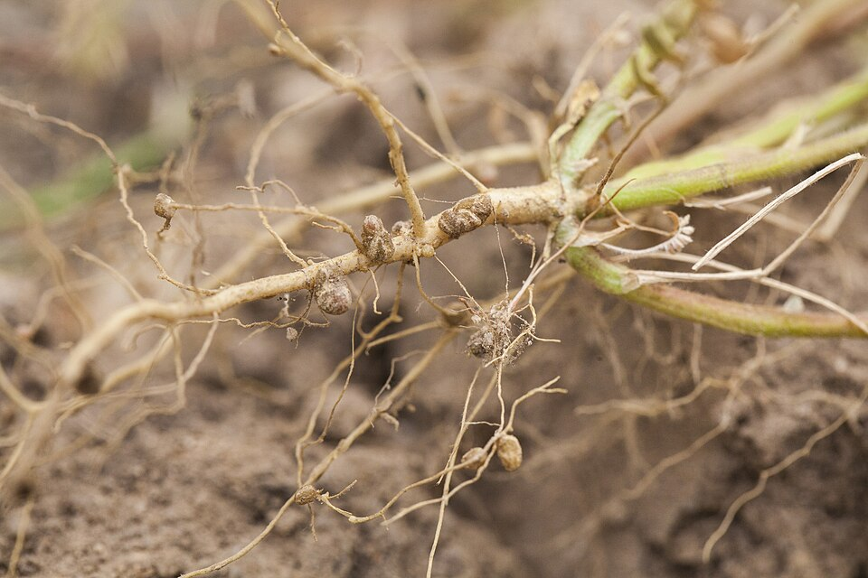
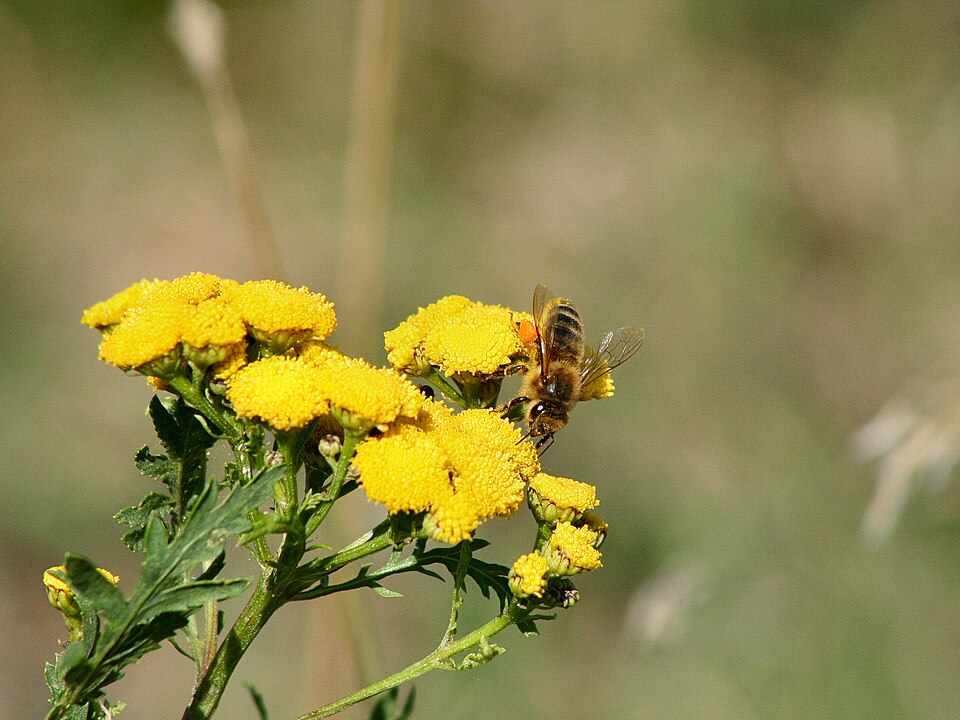

Nine lessons, four hyper-real 3D labs, a Pulse Catcher game and a shuffled practice exam. Revise the whole of Exam 1: micro-organisms, plant life cycles, and the heart, lungs and circulation.
Viruses: influenza, the common cold, chickenpox, COVID-19.
Food poisoning: vomiting, diarrhoea, fever.
Stopping the spread
Wash hands with soap for at least 20 seconds.
Cook food thoroughly.
Keep raw and cooked food separate (use different cutting boards).
Refrigerate food: cold slows growth but does not kill all bacteria.
Which microbe causes which disease?
Bacteria or virus?
Safe or risky food habit?
Cross-contamination is when harmful microorganisms pass from one food or surface to another, for example from raw meat to a sandwich.
Build a full-mark answer
Long-answer builder
“A student makes a sandwich after touching raw meat without washing their hands. Explain the risks and describe three actions that would make food preparation safer.”
Tap every statement you would put in a full-mark answer, then check.
4
Decomposers and the Environment
Nature's recyclers, and microbes in soil, water and extreme places.
Decomposers
Bacteria and fungi break down dead plants and animals.
They recycle nutrients back into the soil for plants to absorb.
Worms are not true decomposers, but they help by breaking dead matter into small pieces.
Composting: food scraps + bacteria + fungi make nutrient-rich compost.
Microbes in the environment
Soil: break down organic matter and release nutrients.
Rhizobium lives in legume roots and fixes nitrogen into a form plants can use.
Water treatment: bacteria break down waste and help purify water.
Some live in extreme places: hot springs and the deep sea.

Root nodules on a legume. They are home to Rhizobium bacteria that fix nitrogen.
Match the microbe job
Decomposer or not?
Put the nutrient cycle in order
Build a full-mark answer
Long-answer builder
“Imagine decomposers suddenly disappeared from an ecosystem. Explain two consequences for the environment and how they would affect plants.”
Tap every statement you would put in a full-mark answer, then check.
Unit B: Plant Life CyclesLessons 5 to 7
5
Germination and the Life Cycle
How a seed wakes up and starts a new plant.
The life cycle
Germination
Flowering
Pollination
Fertilisation
Seed dispersal
The cycle begins and ends with seeds.
Germination
Germination: a seed begins to grow into a new plant.
Needs water, warmth and oxygen.
Does not need direct sunlight to start.
Dormancy: a seed stays inactive until conditions are right.
“A farmer is investigating why some seeds fail to germinate. Design a simple experiment to test the effect of water. Explain what you would change, what you would measure and which conditions you would keep constant.”
Tap every statement you would put in a full-mark answer, then check.
6
Flowers and Pollination
Flower parts, and how pollen gets from flower to flower.
Flower parts
Anther: makes pollen (male).
Stigma: sticky, catches pollen (female).
Ovary: contains ovules; becomes the fruit.
Petals: attract pollinators.
Pollination
Pollination: pollen moves from the anther to the stigma.
Insects (bees, butterflies) carry pollen as they feed on nectar.
Wind carries pollen from grasses, wheat and trees.

A bee visiting flowers. Pollen sticks to its body and moves to the next flower.
Match the flower part to its job
Insect-pollinated or wind-pollinated?
Feature
Insect-pollinated
Wind-pollinated
Petals
Large, bright
Small, dull or none
Smell and nectar
Sweet smell, nectar
None
Pollen
Sticky, spiky, less of it
Light and smooth, huge amounts
Stigma
Sticky, inside the flower
Feathery, outside the flower
Examples
Sunflower, rose
Wheat, grasses, maize
Build a full-mark answer
Long-answer builder
“Explain how bees help flowering plants reproduce. Include the roles of nectar, pollen and the stigma.”
Tap every statement you would put in a full-mark answer, then check.
7
Fertilisation and Seed Dispersal
From pollen to seeds, then off to new places.
Fertilisation
After pollination, the male and female cells unite: this is fertilisation.
It forms a seed.
The ovary usually develops into the fruit, which protects the seeds.
Why disperse seeds?
Less competition for light, water and nutrients.
Plants can colonise new areas.
It helps the species survive.
A dandelion's parachute seeds travel on the wind.
Match the seed to how it travels
Which dispersal method?
From flower to new plant: put it in order
Build a full-mark answer
Long-answer builder
“Explain why seed dispersal is important for the survival of plant species. Include competition for resources and the colonisation of new areas.”
Tap every statement you would put in a full-mark answer, then check.
Unit C: Heart, Lungs and CirculationLessons 8 and 9
8
The Heart, Blood and Vessels
The body's transport system.
The circulatory system
Moves oxygen, nutrients and waste around the body.
Four parts: heart, arteries, veins and blood (plus capillaries).
The heart has four chambers: two atria (top) and two ventricles (bottom).
Right side: deoxygenated blood to the lungs. Left side: oxygenated blood to the body.
“Compare the structure and function of arteries, veins and capillaries. Explain how each is adapted to its role.”
Tap every statement you would put in a full-mark answer, then check.
9
Lungs, Pulse and Exercise
Gas exchange, breathing, respiration and the pulse.
Gas exchange
Air reaches tiny air sacs called alveoli.
Oxygen enters the blood; carbon dioxide leaves it.
The heart pumps oxygen-rich blood round the body; cells use it in respiration.
Breathing moves air; respiration releases energy in cells.
Pulse and exercise
Pulse: the beat felt in an artery when the heart pumps.
Count beats in 15 seconds and multiply by 4.
During exercise, pulse and breathing rates rise to give muscles more oxygen.
Athletes often have a lower resting heart rate.
Match the term
Breathing or respiration?
Put the journey of oxygen in order
Pulse rate calculator
Build a full-mark answer
Long-answer builder
“Design an experiment to investigate how physical activity affects pulse rate. Explain your method, the variables you would control, how you would collect and compare results, and how you would improve reliability.”
Tap every statement you would put in a full-mark answer, then check.
Photo
Real Photos: Tap the Part
Five real photographs from Lessons 2 to 7. Find each part to earn the Photo hunter badge.
Real photo: tap the part
3D
Live Labs
Four hyper-real labs. Bubbling yeast, sprouting seeds, a visiting bee and a beating heart, all working with touch, mouse or keyboard.
Lab 1 · Lesson 2 · 3D
Yeast Balloon Lab
Mix yeast, sugar and water in a bottle. Change the temperature and watch the balloon.
Gas made 0 ml · Balloon flat
Ready
Yeast is a fungus. It feeds on sugar and makes carbon dioxide gas.
Yeast
Sugar
°C
Gas (ml)
Compare tests: no yeast, no sugar, cold, warm and very hot. Run at least four tests.
Lab 2 · Lesson 5 · 3D
Germination Lab
Plant a bean seed and choose its conditions. Which ones does it really need?
Day 0 · Dormant
Plant the seed
Change the conditions, then press Grow.
Water
Oxygen
°C
Light
Result
Test each condition on its own. Change only one thing at a time: that is a fair test.
Lab 3 · Lessons 6 and 7 · 3D
Pollination Lab
Send a bee or a gust of wind between two flowers. Watch pollen reach the stigma, then the fruit form.
Step 0 of 3
Pollination: pollen reaches the stigma
Fertilisation: a seed starts to form
The ovary swells into a fruit
Two flowers
The first flower makes pollen. The second flower needs it on its stigma.
Try both flower types and see how each is adapted to its pollinator.
Lab 4 · Lessons 8 and 9 · 3D
Heart Lab
Tap each chamber, follow the blood, then exercise and count your pulse.
Pulse 70 beats/min · Beats 0
Tap a part
Tap a chamber or vessel in 3D, or use the buttons.
Oxygen reaching the muscles
Blue is blood low in oxygen. Red is blood rich in oxygen. Try the slider, then count a resting and an exercising pulse.
Play
Bonus Game: Pulse Catcher
Time your tap on a racing heartbeat to catch the right answer. About two minutes, no lives.
A question appears and three answer zones sit on a track. A heartbeat light sweeps back and forth. Press Catch (or the space bar) when it is over the answer you think is right. Wrong answers just show the right one and a memory hook. Turn on Slow mode if you want it gentler.